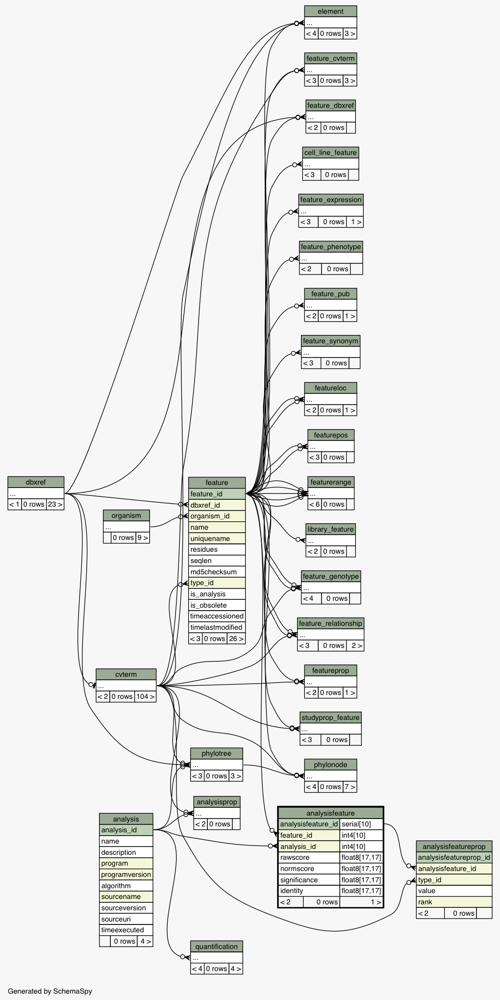
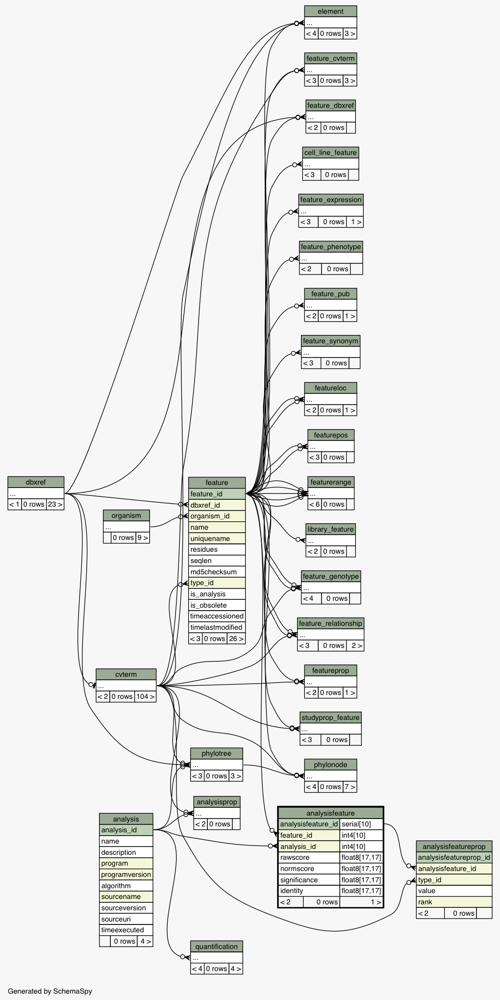

| Table dicty_chado.public.analysisfeature Computational analyses generate features (e.g. Genscan generates transcripts and exons; sim4 alignments generate similarity/match features). analysisfeatures are stored using the feature table from the sequence module. The analysisfeature table is used to decorate these features, with analysis specific attributes. A feature is an analysisfeature if and only if there is a corresponding entry in the analysisfeature table. analysisfeatures will have two or more featureloc entries, with rank indicating query/subject
|
Generated by SchemaSpy |
| ||||||||||||||||||||||||||||||||||||||||||||||||||||||||||||||||||||||||||||||
Table contained 0 rows at Fri Jun 06 11:08 CDT 2014 | ||||||||||||||||||||||||||||||||||||||||||||||||||||||||||||||||||||||||||||||
Indexes:
| Column(s) | Type | Sort | Constraint Name |
|---|---|---|---|
| analysisfeature_id | Primary key | Asc | analysisfeature_pkey |
| feature_id + analysis_id | Must be unique | Asc/Asc | analysisfeature_c1 |
| feature_id | Performance | Asc | analysisfeature_idx1 |
| analysis_id | Performance | Asc | analysisfeature_idx2 |
 

|